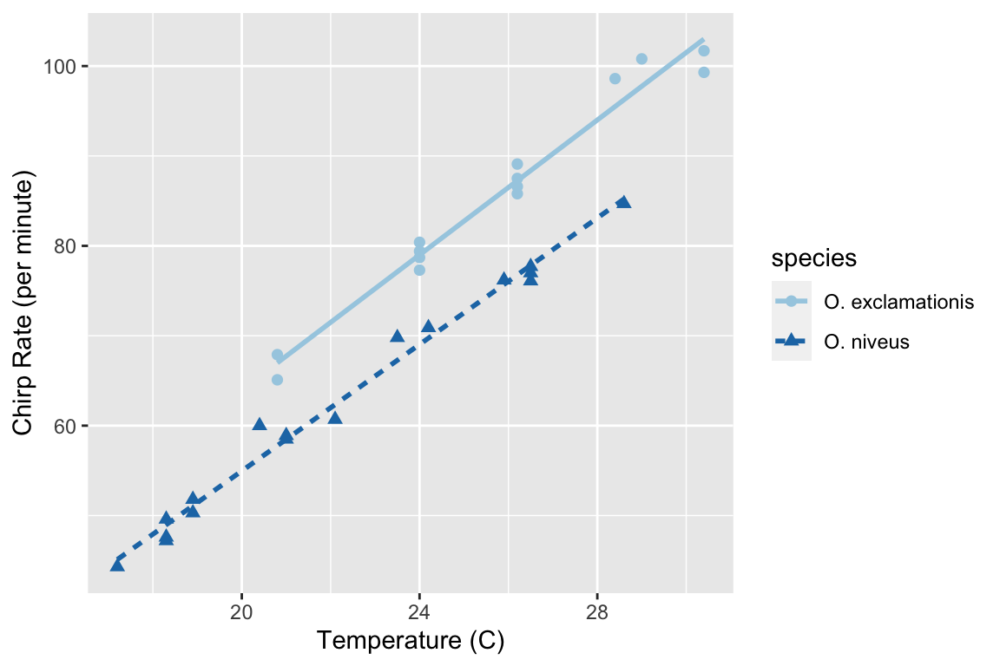
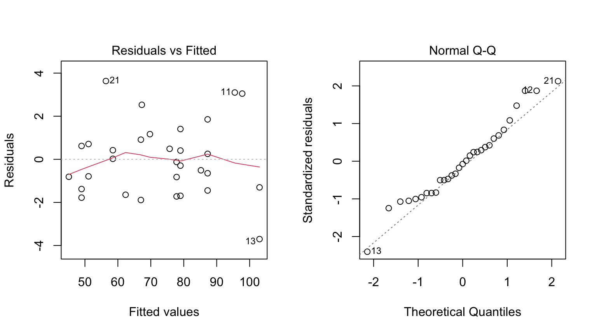
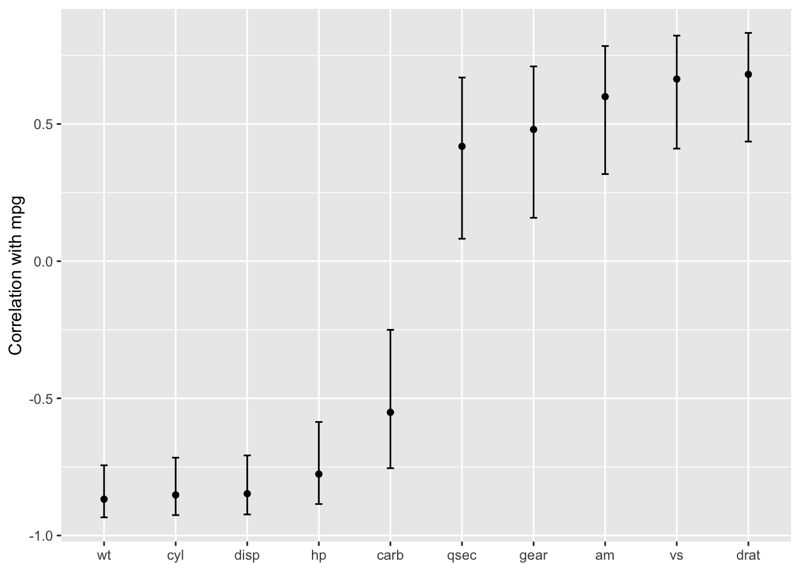

Before describing how to use tidymodels for applying tidy data principles to building models with R, let’s review how models are created, trained, and used in the core R language (often called “base R”). This chapter is a brief illustration of core language conventions that are important to be aware of even if you never use base R for models at all. This chapter is not exhaustive, but it provides readers (especially those new to R) the basic, most commonly used motifs.
The S language, on which R is based, has had a rich data analysis environment since the publication of Chambers and Hastie (1992) (commonly known as The White Book). This version of S introduced standard infrastructure components familiar to R users today, such as symbolic model formulae, model matrices, and data frames, as well as standard object-oriented programming methods for data analysis. These user interfaces have not substantively changed since then.
3.1 An Example
To demonstrate some fundamentals for modeling in base R, let’s use experimental data from McDonald (2009), by way of Mangiafico (2015), on the relationship between the ambient temperature and the rate of cricket chirps per minute. Data were collected for two species: O. exclamationis and O. niveus. The data are contained in a data frame called crickets with a total of 31 data points. These data are shown in Figure @ref(fig:cricket-plot) using the following ggplot2 code.
Code
library(tidyverse)data(crickets, package ="modeldata")names(crickets)# Plot the temperature on the x-axis, the chirp rate on the y-axis. The plot# elements will be colored differently for each species:ggplot(crickets, aes(x = temp, y = rate, color = species, pch = species, lty = species)) +# Plot points for each data point and color by speciesgeom_point(size =2) +# Show a simple linear model fit created separately for each species:geom_smooth(method = lm, se =FALSE, alpha =0.5) +scale_color_brewer(palette ="Paired") +labs(x ="Temperature (C)", y ="Chirp Rate (per minute)")
[1] "species" "temp" "rate"

Relationship between chirp rate and temperature for two different species of crickets
The data exhibit fairly linear trends for each species. For a given temperature, O. exclamationis appears to chirp more per minute than the other species. For an inferential model, the researchers might have specified the following null hypotheses prior to seeing the data:
Temperature has no effect on the chirp rate.
There are no differences between the species’ chirp rate.
There may be some scientific or practical value in predicting the chirp rate but in this example we will focus on inference.
To fit an ordinary linear model in R, the lm() function is commonly used. The important arguments to this function are a model formula and a data frame that contains the data. The formula is symbolic. For example, the simple formula:
rate ~ temp
specifies that the chirp rate is the outcome (since it is on the left-hand side of the tilde ~) and that the temperature value is the predictor.1 Suppose the data contained the time of day in which the measurements were obtained in a column called time. The formula:
rate ~ temp + time
would not add the time and temperature values together. This formula would symbolically represent that temperature and time should be added as separate main effects to the model. A main effect is a model term that contains a single predictor variable.
There are no time measurements in these data but the species can be added to the model in the same way:
rate ~ temp + species
Species is not a quantitative variable; in the data frame, it is represented as a factor column with levels "O. exclamationis" and "O. niveus". The vast majority of model functions cannot operate on nonnumeric data. For species, the model needs to encode the species data in a numeric format. The most common approach is to use indicator variables (also known as dummy variables) in place of the original qualitative values. In this instance, since species has two possible values, the model formula will automatically encode this column as numeric by adding a new column that has a value of zero when the species is "O. exclamationis" and a value of one when the data correspond to "O. niveus". The underlying formula machinery automatically converts these values for the data set used to create the model, as well as for any new data points (for example, when the model is used for prediction).
Suppose there were five species instead of two. The model formula, in this case, would create four binary columns that are binary indicators for four of the species. The reference level of the factor (i.e., the first level) is always left out of the predictor set. The idea is that, if you know the values of the four indicator variables, the value of the species can be determined. We discuss binary indicator variables in more detail in Section @ref(dummies).
The model formula rate ~ temp + species creates a model with different y-intercepts for each species; the slopes of the regression lines could be different for each species as well. To accommodate this structure, an interaction term can be added to the model. This can be specified in a few different ways, and the most basic uses the colon:
rate ~ temp + species + temp:species# A shortcut can be used to expand all interactions containing# interactions with two variables:rate ~ (temp + species)^2# Another shortcut to expand factors to include all possible# interactions (equivalent for this example):rate ~ temp * species
In addition to the convenience of automatically creating indicator variables, the formula offers a few other niceties:
In-line functions can be used in the formula. For example, to use the natural log of the temperature, we can create the formula rate ~ log(temp). Since the formula is symbolic by default, literal math can also be applied to the predictors using the identity function I(). To use Fahrenheit units, the formula could be rate ~ I( (temp * 9/5) + 32 ) to convert from Celsius.
R has many functions that are useful inside of formulas. For example, poly(x, 3) adds linear, quadratic, and cubic terms for x to the model as main effects. The splines package also has several functions to create nonlinear spline terms in the formula.
For data sets where there are many predictors, the period shortcut is available. The period represents main effects for all of the columns that are not on the left-hand side of the tilde. Using ~ (.)^3 would add main effects as well as all two- and three-variable interactions to the model.
Returning to our chirping crickets, let’s use a two-way interaction model. In this book, we use the suffix _fit for R objects that are fitted models.
Code
interaction_fit <-lm(rate ~ (temp + species)^2, data = crickets) # To print a short summary of the model:interaction_fit
This output is a little hard to read. For the species indicator variables, R mashes the variable name (species) together with the factor level (O. niveus) with no delimiter.
Before going into any inferential results for this model, the fit should be assessed using diagnostic plots. We can use the plot() method for lm objects. This method produces a set of four plots for the object, each showing different aspects of the fit, as shown in Figure @ref(fig:interaction-plots).
Code
# Place two plots next to one another:par(mfrow =c(1, 2))# Show residuals vs predicted values:plot(interaction_fit, which =1)# A normal quantile plot on the residuals:plot(interaction_fit, which =2)

Residual diagnostic plots for the linear model with interactions, which appear reasonable enough to conduct inferential analysis
When it comes to the technical details of evaluating expressions, R is lazy (as opposed to eager). This means that model fitting functions typically compute the minimum possible quantities at the last possible moment. For example, if you are interested in the coefficient table for each model term, this is not automatically computed with the model but is instead computed via the summary() method.
Our next order of business with the crickets is to assess if the inclusion of the interaction term is necessary. The most appropriate approach for this model is to recompute the model without the interaction term and use the anova() method.
Code
# Fit a reduced model:main_effect_fit <-lm(rate ~ temp + species, data = crickets) # Compare the two:anova(main_effect_fit, interaction_fit)
This statistical test generates a p-value of 0.25425. This implies that there is a lack of evidence against the null hypothesis that the interaction term is not needed by the model. For this reason, we will conduct further analysis on the model without the interaction.
Residual plots should be reassessed to make sure that our theoretical assumptions are valid enough to trust the p-values produced by the model (plots not shown here but spoiler alert: they are).
We can use the summary() method to inspect the coefficients, standard errors, and p-values of each model term:
Code
summary(main_effect_fit)
Call:
lm(formula = rate ~ temp + species, data = crickets)
Residuals:
Min 1Q Median 3Q Max
-3.0128 -1.1296 -0.3912 0.9650 3.7800
Coefficients:
Estimate Std. Error t value Pr(>|t|)
(Intercept) -7.21091 2.55094 -2.827 0.00858 **
temp 3.60275 0.09729 37.032 < 2e-16 ***
speciesO. niveus -10.06529 0.73526 -13.689 6.27e-14 ***
---
Signif. codes: 0 '***' 0.001 '**' 0.01 '*' 0.05 '.' 0.1 ' ' 1
Residual standard error: 1.786 on 28 degrees of freedom
Multiple R-squared: 0.9896, Adjusted R-squared: 0.9888
F-statistic: 1331 on 2 and 28 DF, p-value: < 2.2e-16
The chirp rate for each species increases by 3.6 chirps as the temperature increases by a single degree. This term shows strong statistical significance as evidenced by the p-value. The species term has a value of -10.07. This indicates that, across all temperature values, O. niveus has a chirp rate that is about 10 fewer chirps per minute than O. exclamationis. Similar to the temperature term, the species effect is associated with a very small p-value.
The only issue in this analysis is the intercept value. It indicates that at 0° C, there are negative chirps per minute for both species. While this doesn’t make sense, the data only go as low as 17.2° C and interpreting the model at 0° C would be an extrapolation. This would be a bad idea. That being said, the model fit is good within the applicable range of the temperature values; the conclusions should be limited to the observed temperature range.
If we needed to estimate the chirp rate at a temperature that was not observed in the experiment, we could use the predict() method. It takes the model object and a data frame of new values for prediction. For example, the model estimates the chirp rate for O. exclamationis for temperatures between 15° C and 20° C can be computed via:
Note that the non-numeric value of species is passed to the predict method, as opposed to the numeric, binary indicator variable.
While this analysis has obviously not been an exhaustive demonstration of R’s modeling capabilities, it does highlight some major features important for the rest of this book:
The language has an expressive syntax for specifying model terms for both simple and quite complex models.
The R formula method has many conveniences for modeling that are also applied to new data when predictions are generated.
There are numerous helper functions (e.g., anova(), summary() and predict()) that you can use to conduct specific calculations after the fitted model is created.
Finally, as previously mentioned, this framework was first published in 1992. Most of these ideas and methods were developed in that period but have remained remarkably relevant to this day. It highlights that the S language and, by extension R, has been designed for data analysis since its inception.
3.2 What Does the R Formula Do?
The R model formula is used by many modeling packages. It usually serves multiple purposes:
The formula defines the columns that the model uses.
The standard R machinery uses the formula to encode the columns into an appropriate format.
The roles of the columns are defined by the formula.
For the most part, practitioners’ understanding of what the formula does is dominated by the last purpose. Our focus when typing out a formula is often to declare how the columns should be used. For example, the previous specification we discussed sets up predictors to be used in a specific way:
(temp + species)^2
Our focus, when seeing this, is that there are two predictors and the model should contain their main effects and the two-way interactions. However, this formula also implies that, since species is a factor, it should also create indicator variable columns for this predictor (see Section @ref(dummies)) and multiply those columns by the temp column to create the interactions. This transformation represents our second bullet point on encoding; the formula also defines how each column is encoded and can create additional columns that are not in the original data.
This is an important point that will come up multiple times in this text, especially when we discuss more complex feature engineering in Chapter @ref(recipes) and beyond. The formula in R has some limitations, and our approaches to overcoming them contend with all three aspects.
3.3 Why Tidiness Is Important for Modeling
One of the strengths of R is that it encourages developers to create a user interface that fits their needs. As an example, here are three common methods for creating a scatter plot of two numeric variables in a data frame called plot_data:
Code
plot(plot_data$x, plot_data$y)library(lattice)xyplot(y ~ x, data = plot_data)library(ggplot2)ggplot(plot_data, aes(x = x, y = y)) +geom_point()
In these three cases, separate groups of developers devised three distinct interfaces for the same task. Each has advantages and disadvantages.
In comparison, the Python Developer’s Guide espouses the notion that, when approaching a problem:
“There should be one – and preferably only one – obvious way to do it.”
R is quite different from Python in this respect. An advantage of R’s diversity of interfaces is that it can evolve over time and fit different needs for different users.
Unfortunately, some of the syntactical diversity is due to a focus on the needs of the person developing the code instead of the needs of the person using the code. Inconsistencies among packages can be a stumbling block for R users.
Suppose your modeling project has an outcome with two classes. There are a variety of statistical and machine learning models you could choose from. In order to produce a class probability estimate for each sample, it is common for a model function to have a corresponding predict() method. However, there is significant heterogeneity in the argument values used by those methods to make class probability predictions; this heterogeneity can be difficult for even experienced users to navigate. A sampling of these argument values for different models is shown in Table @ref(tab:probability-args).
Heterogeneous argument names for different modeling functions.
Function
Package
Code
lda()
MASS
predict(object)
glm()
stats
predict(object, type = "response")
gbm()
gbm
predict(object, type = "response", n.trees)
mda()
mda
predict(object, type = "posterior")
rpart()
rpart
predict(object, type = "prob")
various
RWeka
predict(object, type = "probability")
logitboost()
LogitBoost
predict(object, type = "raw", nIter)
pamr.train()
pamr
pamr.predict(object, type = "posterior")
Note that the last example has a custom function to make predictions instead of using the more common predict() interface (the generic predict() method). This lack of consistency is a barrier to day-to-day usage of R for modeling.
As another example of unpredictability, the R language has conventions for missing data that are handled inconsistently. The general rule is that missing data propagate more missing data; the average of a set of values with a missing data point is itself missing and so on. When models make predictions, the vast majority require all of the predictors to have complete values. There are several options baked in to R at this point with the generic function na.action(). This sets the policy for how a function should behave if there are missing values. The two most common policies are na.fail() and na.omit(). The former produces an error if missing data are present while the latter removes the missing data prior to calculations by case-wise deletion. From our previous example:
Code
# Add a missing value to the prediction setnew_values$temp[1] <-NA# The predict method for `lm` defaults to `na.pass`:predict(main_effect_fit, new_values)
From a user’s point of view, na.omit() can be problematic. In our example, new_values has 6 rows but only 5 would be returned with na.omit(). To adjust for this, the user would have to determine which row had the missing value and interleave a missing value in the appropriate place if the predictions were merged into new_values.2 While it is rare that a prediction function uses na.omit() as its missing data policy, this does occur. Users who have determined this as the cause of an error in their code find it quite memorable.
To resolve the usage issues described here, the tidymodels packages have a set of design goals. Most of the tidymodels design goals fall under the existing rubric of “Design for Humans” from the tidyverse (Wickham et al. 2019), but with specific applications for modeling code. There are a few additional tidymodels design goals that complement those of the tidyverse. Some examples:
R has excellent capabilities for object-oriented programming, and we use this in lieu of creating new function names (such as a hypothetical new predict_samples() function).
Sensible defaults are very important. Also, functions should have no default for arguments when it is more appropriate to force the user to make a choice (e.g., the file name argument for read_csv()).
Similarly, argument values whose default can be derived from the data should be. For example, for glm() the family argument could check the type of data in the outcome and, if no family was given, a default could be determined internally.
Functions should take the data structures that users have as opposed to the data structure that developers want. For example, a model function’s only interface should not be constrained to matrices. Frequently, users will have non-numeric predictors such as factors.
Many of these ideas are described in the tidymodels guidelines for model implementation.3 In subsequent chapters, we will illustrate examples of existing issues, along with their solutions.
A few existing R packages provide a unified interface to harmonize these heterogeneous modeling APIs, such as caret and mlr. The tidymodels framework is similar to these in adopting a unification of the function interface, as well as enforcing consistency in the function names and return values. It is different in its opinionated design goals and modeling implementation, discussed in detail throughout this book.
The broom::tidy() function, which we use throughout this book, is another tool for standardizing the structure of R objects. It can return many types of R objects in a more usable format. For example, suppose that predictors are being screened based on their correlation to the outcome column. Using purrr::map(), the results from cor.test() can be returned in a list for each predictor:
Code
corr_res <-map(mtcars %>%select(-mpg), cor.test, y = mtcars$mpg)# The first of ten results in the vector: corr_res[[1]]
Pearson's product-moment correlation
data: .x[[i]] and mtcars$mpg
t = -8.9197, df = 30, p-value = 6.113e-10
alternative hypothesis: true correlation is not equal to 0
95 percent confidence interval:
-0.9257694 -0.7163171
sample estimates:
cor
-0.852162
If we want to use these results in a plot, the standard format of hypothesis test results are not very useful. The tidy() method can return this as a tibble with standardized names:
Code
library(broom)tidy(corr_res[[1]])
These results can be “stacked” and added to a ggplot(), as shown in Figure @ref(fig:corr-plot).
Code
corr_res %>%# Convert each to a tidy format; `map_dfr()` stacks the data frames map_dfr(tidy, .id ="predictor") %>%ggplot(aes(x =fct_reorder(predictor, estimate))) +geom_point(aes(y = estimate)) +geom_errorbar(aes(ymin = conf.low, ymax = conf.high), width = .1) +labs(x =NULL, y ="Correlation with mpg")

Correlations (and 95% confidence intervals) between predictors and the outcome in the mtcars data set
Creating such a plot is possible using core R language functions, but automatically reformatting the results makes for more concise code with less potential for errors.
3.4 Combining Base R Models and the Tidyverse
R modeling functions from the core language or other R packages can be used in conjunction with the tidyverse, especially with the dplyr, purrr, and tidyr packages. For example, if we wanted to fit separate models for each cricket species, we can first break out the cricket data by this column using dplyr::group_nest():
The data column contains the rate and temp columns from crickets in a list column. From this, the purrr::map() function can create individual models for each species:
To collect the coefficients for each of these models, use broom::tidy() to convert them to a consistent data frame format so that they can be unnested:
List columns can be very powerful in modeling projects. List columns provide containers for any type of R objects, from a fitted model itself to the important data frame structure.
3.5 The tidymodels Metapackage
The tidyverse (Chapter @ref(tidyverse)) is designed as a set of modular R packages, each with a fairly narrow scope. The tidymodels framework follows a similar design. For example, the rsample package focuses on data splitting and resampling. Although resampling methods are critical to other activities of modeling (e.g., measuring performance), they reside in a single package, and performance metrics are contained in a different, separate package, yardstick. There are many benefits to adopting this philosophy of modular packages, from less bloated model deployment to smoother package maintenance.
The downside to this philosophy is that there are a lot of packages in the tidymodels framework. To compensate for this, the tidymodels package (which you can think of as a metapackage like the tidyverse package) loads a core set of tidymodels and tidyverse packages. Loading the package shows which packages are attached:
── Conflicts ───────────────────────────────────────── tidymodels_conflicts() ──
✖ purrr::discard() masks scales::discard()
✖ dplyr::filter() masks stats::filter()
✖ dplyr::lag() masks stats::lag()
✖ recipes::step() masks stats::step()
• Search for functions across packages at https://www.tidymodels.org/find/
If you have used the tidyverse, you’ll notice some familiar names as a few tidyverse packages, such as dplyr and ggplot2, are loaded together with the tidymodels packages. We’ve already said that the tidymodels framework applies tidyverse principles to modeling, but the tidymodels framework also literally builds on some of the most fundamental tidyverse packages such as these.
Loading the metapackage also shows if there are function naming conflicts with previously loaded packages. As an example of a naming conflict, before loading tidymodels, invoking the filter() function will execute the function in the stats package. After loading tidymodels, it will execute the dplyr function of the same name.
There are a few ways to handle naming conflicts. The function can be called with its namespace (e.g., stats::filter()). This is not bad practice, but it does make the code less readable.
Another option is to use the conflicted package. We can set a rule that remains in effect until the end of the R session to ensure that one specific function will always run if no namespace is given in the code. As an example, if we prefer the dplyr version of the previous function:
For convenience, tidymodels contains a function that captures most of the common naming conflicts that we might encounter:
Code
tidymodels_prefer(quiet =FALSE)
[conflicted] Will prefer dplyr::filter over any other package.
[conflicted] Will prefer dplyr::select over any other package.
[conflicted] Will prefer dplyr::slice over any other package.
[conflicted] Will prefer dplyr::rename over any other package.
[conflicted] Will prefer dials::neighbors over any other package.
[conflicted] Will prefer parsnip::fit over any other package.
[conflicted] Will prefer parsnip::bart over any other package.
[conflicted] Will prefer parsnip::pls over any other package.
[conflicted] Will prefer purrr::map over any other package.
[conflicted] Will prefer recipes::step over any other package.
[conflicted] Will prefer themis::step_downsample over any other package.
[conflicted] Will prefer themis::step_upsample over any other package.
[conflicted] Will prefer tune::tune over any other package.
[conflicted] Will prefer yardstick::precision over any other package.
[conflicted] Will prefer yardstick::recall over any other package.
[conflicted] Will prefer yardstick::spec over any other package.
── Conflicts ──────────────────────────────────────────── tidymodels_prefer() ──
Be aware that using this function opts you in to using conflicted::conflict_prefer() for all namespace conflicts, making every conflict an error and forcing you to choose which function to use. The function tidymodels::tidymodels_prefer() handles the most common conflicts from tidymodels functions, but you will need to handle other conflicts in your R session yourself.
3.6 Chapter Summary
This chapter reviewed core R language conventions for creating and using models that are an important foundation for the rest of this book. The formula operator is an expressive and important aspect of fitting models in R and often serves multiple purposes in non-tidymodels functions. Traditional R approaches to modeling have some limitations, especially when it comes to fluently handling and visualizing model output. The tidymodels metapackage applies tidyverse design philosophy to modeling packages.
Chambers, J, and T Hastie, eds. 1992. Statistical Models in S. Boca Raton, FL: CRC Press, Inc.
McDonald, J. 2009. Handbook of Biological Statistics. Sparky House Publishing.
Wickham, H, M Averick, J Bryan, W Chang, L McGowan, R François, G Grolemund, et al. 2019. “Welcome to the Tidyverse.”Journal of Open Source Software 4 (43).
Most model functions implicitly add an intercept column.↩︎
A base R policy called na.exclude() does exactly this.↩︎